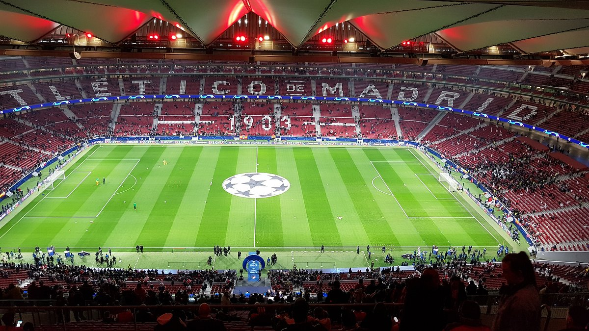

Estádio Cívitas Metropolitano
O Estádio Civitas Metropolitano, inaugurado em 2017, é a casa do Atlético de Madrid, um dos clubes mais tradicionais e bem-sucedidos do futebol espanhol. Localizado em Madri, o estádio é um verdadeiro símbolo da paixão do clube e dos seus torcedores, conhecido por sua atmosfera vibrante e acolhedora.
Estrutura e Capacidade
Com uma capacidade para aproximadamente 68.000 espectadores, o Civitas Metropolitano é um dos maiores estádios da Espanha. Seu design moderno combina elementos arquitetônicos inovadores com a rica história do Atlético de Madrid. A estrutura apresenta uma cobertura única que permite que o som das torcidas reverberem, criando uma experiência emocionante durante os jogos. As cores predominantes do estádio, vermelho e branco, homenageiam as cores tradicionais do clube.
O Civitas Metropolitano é conhecido por sua atmosfera vibrante, especialmente durante os jogos. Os torcedores do Atlético de Madrid, conhecidos como colchoneros, são famosos por seu apoio incondicional, criando uma experiência inesquecível para quem visita o estádio. As canções e os gritos de incentivo que ecoam pelas arquibancadas mostram a paixão e a lealdade dos fãs ao clube.